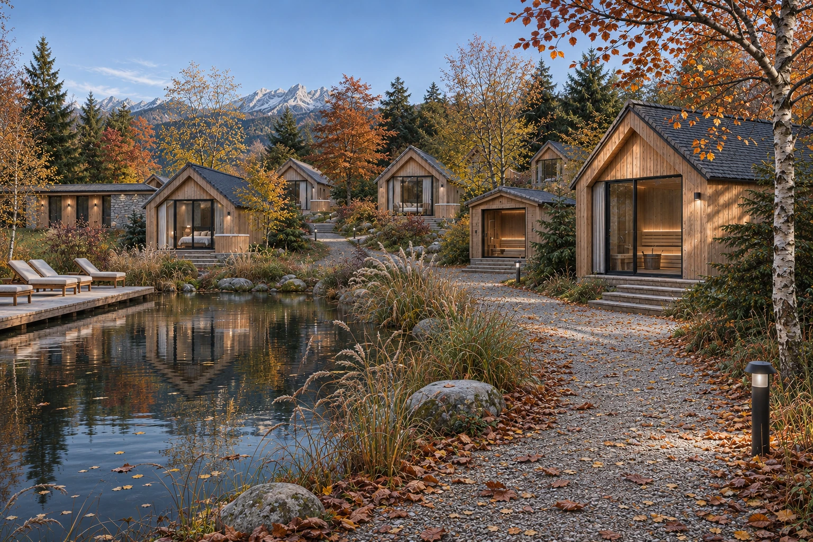
GLAMPING · MASTERPLAN · GORENJSKA
Glamping ob ribniku
A place to stay, slow down and gather beside the water.
One landscape. A complete glamping experience.
A concept for a glamping resort in Gorenjska, Slovenia, organised around a landscaped pond. Timber cabins, A-frame meadow pods and motorhome pitches are connected by paths and shared outdoor spaces. Saunas, minigolf, a fire circle and recreation areas complete the setting. The masterplan and visualisations show how accommodation, planting and guest activities fit together, from summer days to autumn and winter evenings.
LocationGorenjska, Slovenia
Project typeGlamping concept & masterplan
ScopeSite layout & architectural visualisation
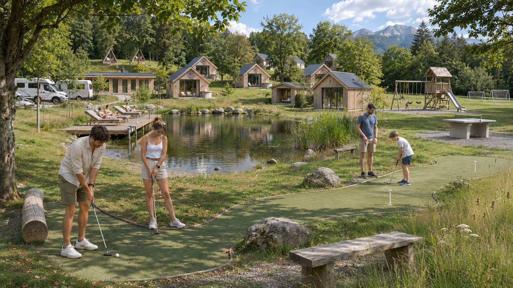
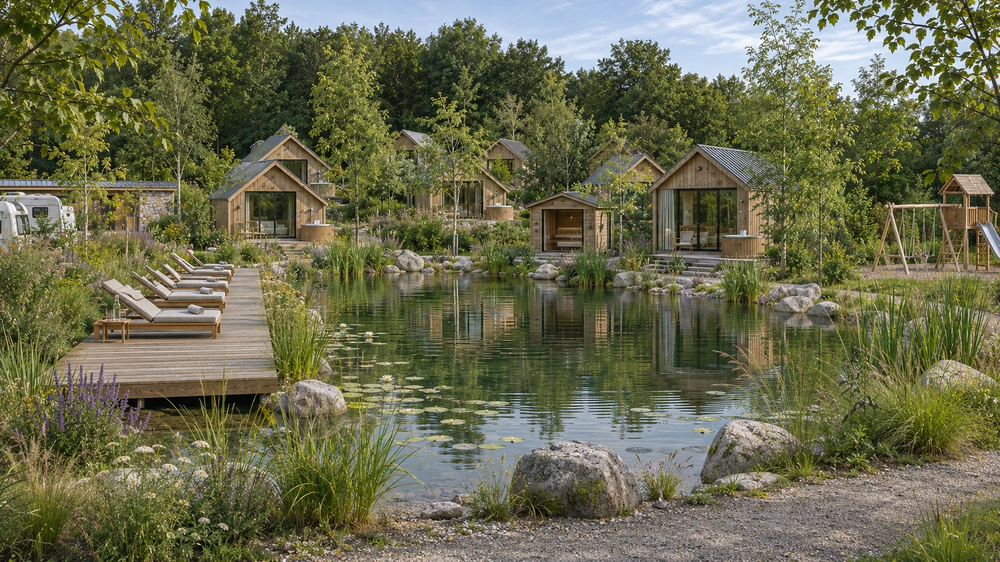
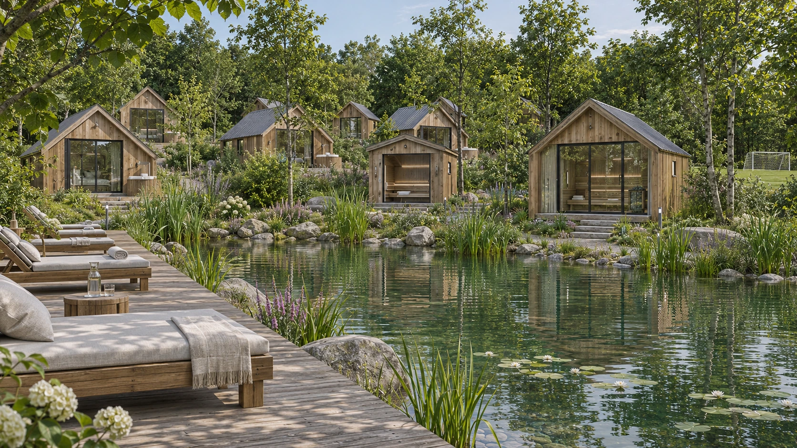
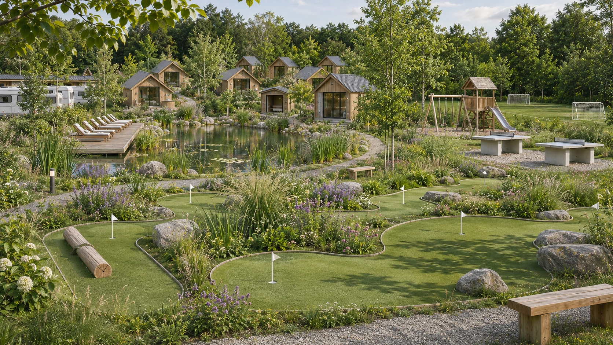
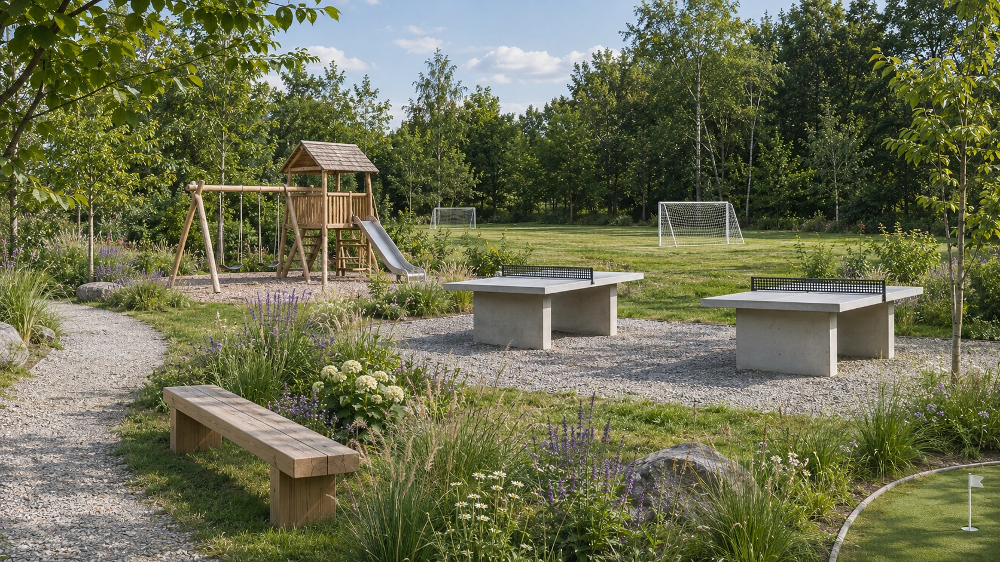
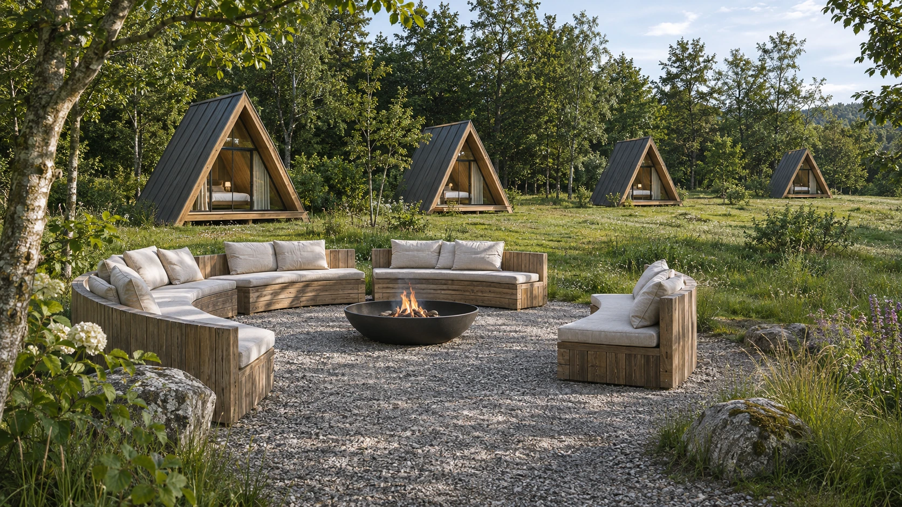
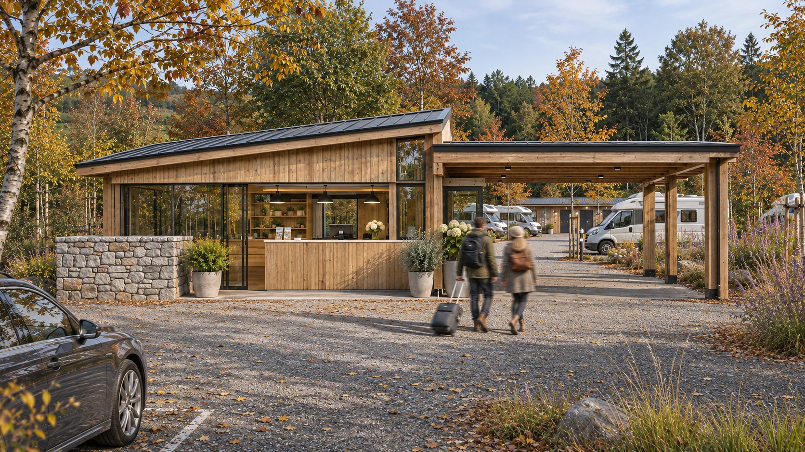
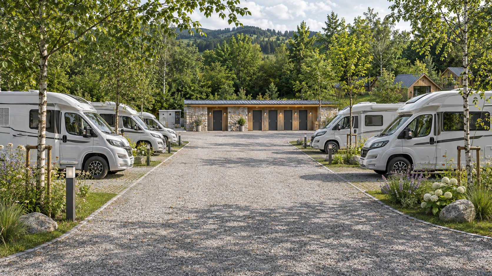
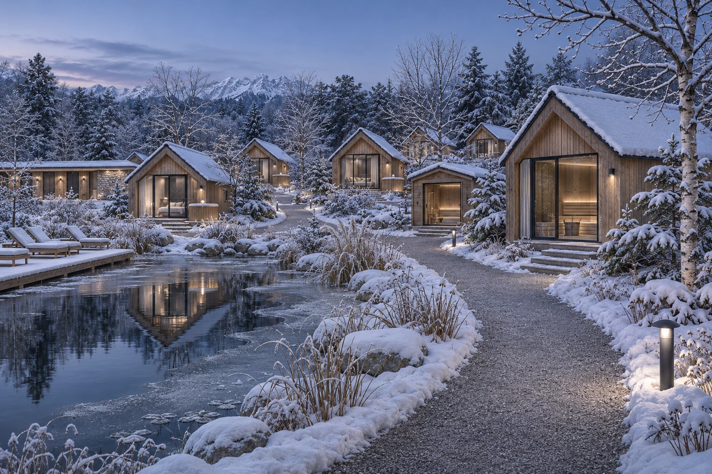
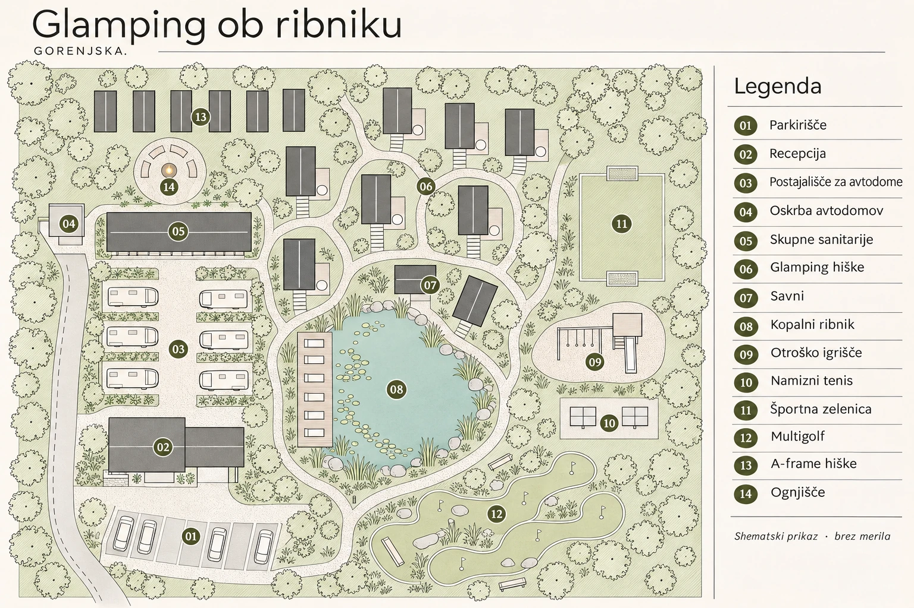
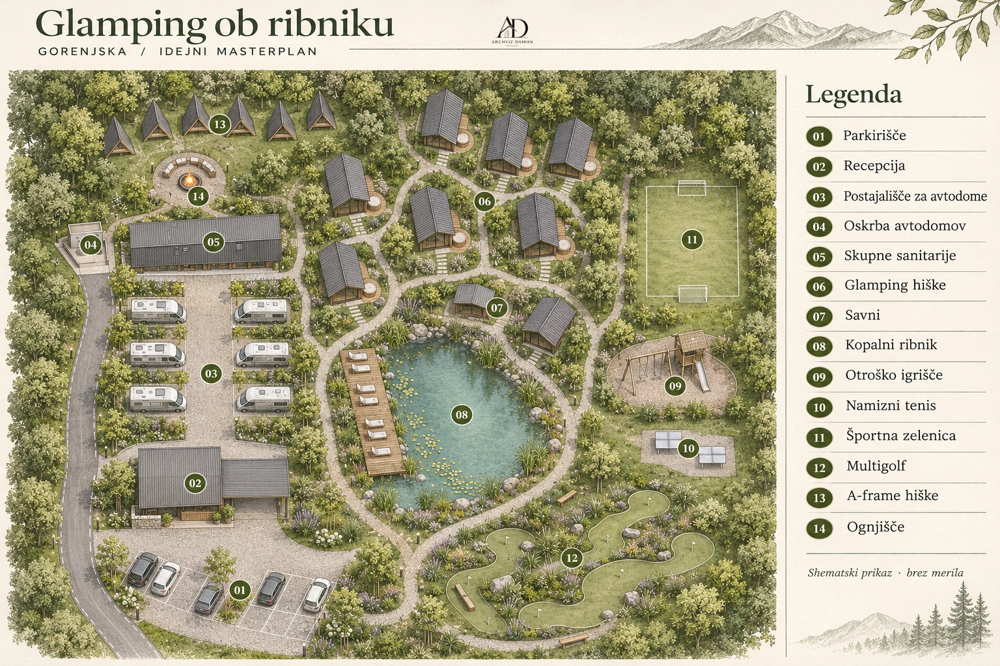

PROJECT SERVICES
From a site concept to a clear visual story.
Continue exploring
Related project studies.
Available for collaboration